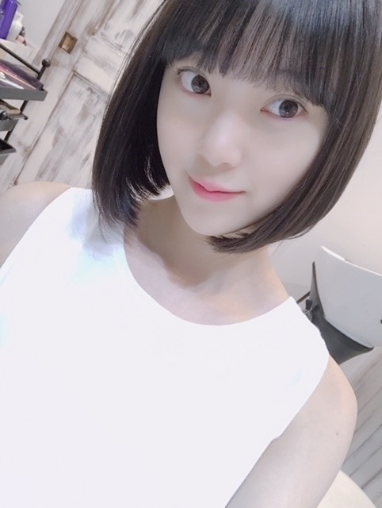

2018/0621Thu髪、切りました。
最近は
恋を知らない僕たちは
理想的ボーイフレンド
を、読みはじめています。
む、胸キュン。
そして昨日

バッサリ髪を切りました！
さっぱり！
重めボブです。
伸ばしていた髪ですが
1つの区切りとして、
切らせていただきました。
ボブ未央奈もよろしくお願いします☺︎

なんか、幼くなったねって言われる(u_u)笑
よーし。
頑張ろうっ
では。
2018/06/21 14:18
コメント(771)
みおな最高❗️
神宮最高‼️
神宮最高‼️
すごくかわいいです、、！！
可愛い
天使です。
天使です。
ボブ未央奈(笑)。
自分から「○○未央奈」って
言ってくれるんですね(笑)。
ちなみに「のり未央奈」って、
のりさんは、のりさんが未央奈ちゃんに
なりすましたキャラクターっていう
つもりで言ってると思うよ。
「みなみおな」みたいに、
みなみちゃん＋未央奈ちゃんではなくてね。
握手会、楽しんで♪
自分から「○○未央奈」って
言ってくれるんですね(笑)。
ちなみに「のり未央奈」って、
のりさんは、のりさんが未央奈ちゃんに
なりすましたキャラクターっていう
つもりで言ってると思うよ。
「みなみおな」みたいに、
みなみちゃん＋未央奈ちゃんではなくてね。
握手会、楽しんで♪
やっぽー。セブンやよ(ฅ'ω'ฅ)♪
みり愛半端ない！
こぼしても平気やん 笑
さすがです
表情も良い 笑
セラミュ良かったよね
みり愛も蘭世も皆カッコいいし可愛いし
ストーリーも良くて感動(ToT)
未央奈も泣いたかな？
では、今日も1日楽しもうd(@^∇ﾟ)/ﾌｧｲﾄｯ♪
o(ﾟ▽＾)ﾉｼまたねぃ♪
みり愛半端ない！
こぼしても平気やん 笑
さすがです
表情も良い 笑
セラミュ良かったよね
みり愛も蘭世も皆カッコいいし可愛いし
ストーリーも良くて感動(ToT)
未央奈も泣いたかな？
では、今日も1日楽しもうd(@^∇ﾟ)/ﾌｧｲﾄｯ♪
o(ﾟ▽＾)ﾉｼまたねぃ♪
ショート似合うね
堀ちゃんは、僕のドンピシャタイプです。堀ちゃんは堀ちゃんです。堀ちゃんらしく頑張って下さい。ずっと応援し続けます。大好きです。 また、会いに行きます。堀ちゃん可愛いです。
堀未央奈 様
お疲れ様です。
体調は大丈夫ですか？
あまり無理しないで下さい。
茶茉(ちゃま)
お疲れ様です。
体調は大丈夫ですか？
あまり無理しないで下さい。
茶茉(ちゃま)
握手会おつかれさま。
いつも忙しいだろうから大変だね。
マウスのCMみたんだ！ミオナが言うシーン毎回真似してるんだ❤️笑
可愛いよねミオナマウス❤️
更新楽しみ待ってるね❤️
いつも忙しいだろうから大変だね。
マウスのCMみたんだ！ミオナが言うシーン毎回真似してるんだ❤️笑
可愛いよねミオナマウス❤️
更新楽しみ待ってるね❤️
お仕事お疲れ様でございます
男女６人青春愛憎劇！
嘘から始まる彼氏！
ですか‼︎
読んでるだけで心キュンキュンしそうですね
こんな恋愛生まれ変わるしかもぉできないですよ…漫画ってやっぱり素晴らしいですね‼︎
ボブ未央奈さん‼︎素敵です^ ^
髪の毛綺麗ですよね
キューティクルにダメージがないのか
天使の輪が
乃木撮楽しみにしています^ ^
男女６人青春愛憎劇！
嘘から始まる彼氏！
ですか‼︎
読んでるだけで心キュンキュンしそうですね
こんな恋愛生まれ変わるしかもぉできないですよ…漫画ってやっぱり素晴らしいですね‼︎
ボブ未央奈さん‼︎素敵です^ ^
髪の毛綺麗ですよね
キューティクルにダメージがないのか
天使の輪が
乃木撮楽しみにしています^ ^
私は美少女と少女漫画大好きで、
はあみおなと趣味あう〜とか思ってます笑
私は最近漫画なら
花野井くんと恋する私
私たちはどうかしている
女の子なら
深瀬美桜ちゃん
津代美月ちゃん
詩藤萌々ちゃん
がすきだな〜 ❤︎❤︎
体調に気をつけてね、ショート可愛い♡
❥❥乃木坂LOVE パラダイス
はあみおなと趣味あう〜とか思ってます笑
私は最近漫画なら
花野井くんと恋する私
私たちはどうかしている
女の子なら
深瀬美桜ちゃん
津代美月ちゃん
詩藤萌々ちゃん
がすきだな〜 ❤︎❤︎
体調に気をつけてね、ショート可愛い♡
❥❥乃木坂LOVE パラダイス
ボブミ～＾＾なんか一番安定してる感じがするぞ！
こんばんは♪
お！めっちゃ髪短くなってる！！
なんだか未央奈らしいね♪
もはやカワイイの極致!?
ボブ未央奈これからも宜しくね！
今日はゆっくり休んでね。
お！めっちゃ髪短くなってる！！
なんだか未央奈らしいね♪
もはやカワイイの極致!?
ボブ未央奈これからも宜しくね！
今日はゆっくり休んでね。
未央奈、
今日は握手会2部で、
右耳かけ内巻きショートボブに
Vネック薄ベージュ花柄ワンピースの
きれいでかわいい未央奈に
会えてうれしかったよ。
体調は大丈夫かな。
右手は大丈夫かな。
無理はしないでね。
今日は未央奈に、
おしゃれな服だね。
やっぱりショートボブは未央奈によく似合うよね。
とか、
「ar 」の浴衣姿は、
和風美人って感じできれいだったよ。
よく似合ってたね。
とか、
マウスコンピューターの新メンバーおめでとう。
ギター持って立ってるところで、
昔のPVを思い出したよ。
とか、
伝えられてよかったよ。
次の握手会は7月16日だね。
2部で きれいでかわいい未央奈に
また会えるのが、
とっても楽しみだよ〜。
では、真夏の全国ツアー神宮エリアでの
未央奈のパフォーマンスを
楽しみにしてるね。
今日は握手会2部で、
右耳かけ内巻きショートボブに
Vネック薄ベージュ花柄ワンピースの
きれいでかわいい未央奈に
会えてうれしかったよ。
体調は大丈夫かな。
右手は大丈夫かな。
無理はしないでね。
今日は未央奈に、
おしゃれな服だね。
やっぱりショートボブは未央奈によく似合うよね。
とか、
「ar 」の浴衣姿は、
和風美人って感じできれいだったよ。
よく似合ってたね。
とか、
マウスコンピューターの新メンバーおめでとう。
ギター持って立ってるところで、
昔のPVを思い出したよ。
とか、
伝えられてよかったよ。
次の握手会は7月16日だね。
2部で きれいでかわいい未央奈に
また会えるのが、
とっても楽しみだよ〜。
では、真夏の全国ツアー神宮エリアでの
未央奈のパフォーマンスを
楽しみにしてるね。
未央奈可愛良すぎー‼️
やっぱショートが似合うよネー‼️
やっぱショートが似合うよネー‼️
未央奈ちゃんブログありがとう！
最近忙しくてコメント久しぶりになってしまった。。
未央奈ちゃん髪切ったんやね！
ボブもかわいい〜〜
また気分でエクステとかつけてほしいなぁ
未央奈ちゃんマウスのCMにも出てて
びっくりしたし未央奈ちゃんの活躍をみることが
毎日楽しいです
私も頑張る勇気もらってます。
ちょっと真面目なコメントになったけど笑
またコメント書きます！
おやすみおな〜
最近忙しくてコメント久しぶりになってしまった。。
未央奈ちゃん髪切ったんやね！
ボブもかわいい〜〜
また気分でエクステとかつけてほしいなぁ
未央奈ちゃんマウスのCMにも出てて
びっくりしたし未央奈ちゃんの活躍をみることが
毎日楽しいです
私も頑張る勇気もらってます。
ちょっと真面目なコメントになったけど笑
またコメント書きます！
おやすみおな〜
こんばんは。セブンやよ(ฅ'ω'ฅ)♪
今日も1日お疲れ様でした
途中体調崩しちゃいましたか！
大丈夫ですか？
そういう時もあるよね
人間だもの
気を落とさず早く元気になって
今日の分まで皆にハッピーを届けてください(^-^)
では、明日も1日楽しもう(ฅ'ω'ฅ)♪
おやすみおな☪️
今日も1日お疲れ様でした
途中体調崩しちゃいましたか！
大丈夫ですか？
そういう時もあるよね
人間だもの
気を落とさず早く元気になって
今日の分まで皆にハッピーを届けてください(^-^)
では、明日も1日楽しもう(ฅ'ω'ฅ)♪
おやすみおな☪️
未央奈＼(^^)／
名探偵コナンを見てたら、未央奈って名前のショートカットの可愛らしい女の子が出てきた。
もはや未央奈なんですけど!!!
もはや未央奈なんですけど!!!
「ボブ未央奈」という強烈なシュートが胸に刺さりましたよ！
こんなシュートは誰にも止められません。
早く体調を整えて、また元気な姿を見せてください！
いつも応援しています！
こんなシュートは誰にも止められません。
早く体調を整えて、また元気な姿を見せてください！
いつも応援しています！
堀ちゃんブログありがとー。
レコメンとても面白かったです
ボブみおないいですねー。
レコメンとても面白かったです
ボブみおないいですねー。
やぁ(・∀・)ノ未央奈ちゃん♡こんばんは！
りょーへー(R.N.イナダウアーびーむ)だよ♪
今日は握手会お疲れ様！最近は気温差が激しいし、今日も雨が降ってきたせいで寒くなったし、そういうのが未央奈ちゃんの体調に影響しちゃったのかもね！一昨日は微熱だとも言ってたし！未央奈ちゃんはがんばり屋さんだからさ、無理しすぎて体調崩しちゃうのが心配だよ…！ホント、休めるときにしっかり休んで、無理はせず、明日からも身体に気を付けながらお仕事頑張ってほしい！
実はさ、俺も最近はバタバタ…！今日も予定がたくさんで色んな所行ってきて、まだ帰り道だし、明日からも予定がたくさん！自分が無理しすぎるとパンクするタイプだってのは知ってるから、上手く加減してこなしていかないとなって思う！お互い、今が頑張り時かもね！がんばろーう♪
未央奈ちゃんも流行に乗ったね～～笑 まぁ、みり愛ちゃんは半端ねぇかもしれない！お写真からも全く一緒なのがわかる！未央奈ちゃんからみり愛ちゃんのワンショットが送られてくるなんて、可愛い妹の写真をおすそわけ、みたいな感じがするなぁ！
帰ったらブドウが食べたい…！
#毎日コメント
#握手会お疲れ様
#しっかり休んで
#お大事にね
#早く良くなりますよーに
#秋になったら
#たくさん会いに行くよー
#そういや
#今日はお昼も夜も
#テキトーなものしか食っとらん
#良くないね
#ねっむい
#家に着いたら
#バタンキューしそう笑
#明日も楽しみおな♡
#おやすみおな(*￣∇￣)ノ
りょーへー(R.N.イナダウアーびーむ)だよ♪
今日は握手会お疲れ様！最近は気温差が激しいし、今日も雨が降ってきたせいで寒くなったし、そういうのが未央奈ちゃんの体調に影響しちゃったのかもね！一昨日は微熱だとも言ってたし！未央奈ちゃんはがんばり屋さんだからさ、無理しすぎて体調崩しちゃうのが心配だよ…！ホント、休めるときにしっかり休んで、無理はせず、明日からも身体に気を付けながらお仕事頑張ってほしい！
実はさ、俺も最近はバタバタ…！今日も予定がたくさんで色んな所行ってきて、まだ帰り道だし、明日からも予定がたくさん！自分が無理しすぎるとパンクするタイプだってのは知ってるから、上手く加減してこなしていかないとなって思う！お互い、今が頑張り時かもね！がんばろーう♪
未央奈ちゃんも流行に乗ったね～～笑 まぁ、みり愛ちゃんは半端ねぇかもしれない！お写真からも全く一緒なのがわかる！未央奈ちゃんからみり愛ちゃんのワンショットが送られてくるなんて、可愛い妹の写真をおすそわけ、みたいな感じがするなぁ！
帰ったらブドウが食べたい…！
#毎日コメント
#握手会お疲れ様
#しっかり休んで
#お大事にね
#早く良くなりますよーに
#秋になったら
#たくさん会いに行くよー
#そういや
#今日はお昼も夜も
#テキトーなものしか食っとらん
#良くないね
#ねっむい
#家に着いたら
#バタンキューしそう笑
#明日も楽しみおな♡
#おやすみおな(*￣∇￣)ノ
未央奈ちゃん、ひろっしーです！コメント投稿457回目です！
前回はブログとモバメの感想を書きました！
時間→「No.610 2018年6月22日 02:00」
モバメ毎日ありがとうございます！
あっ、流行ワード早速使ってますね(笑)
Tシャツと同じ色のパスタを食べているみり愛ちゃん、写真はどういう表情なんやろ？それにしてもミラクル！確かに半端ないね！
握手会お疲れ様でした！途中から欠席されたんですね・・・逆に微熱が続いているのに、途中まで参加してくれた事に感謝です！僕は行っていませんが、ありがとうございました！きっと皆さん凄く嬉しかったと思います！明日からのお仕事も超絶バタバタなんですね！毎日本当にお疲れ様です！未央奈ちゃんから癒し、元気、刺激を受ける毎日は凄く幸せです！超絶可愛い写真で癒されたので、明日からも頑張ります！水色のネイル、服と合っていて素敵です！
未央奈ちゃんの絶好調超!!!!な活躍は嬉しいのですが、どうしても体調大丈夫かな～と思ってしまいます！お仕事も大事ですが、体調管理も大事ですよ(笑) 僕も人の事は言えませんが(謝)
ヨシッ！残り3日！僕も根性で乗り切るぞ～！
ここまで読んで頂きありがとうございました！
毎日お仕事お疲れ様です！体調にはくれぐれも気を付けて頑張ってくださいね！
おやすみおな～！
前回はブログとモバメの感想を書きました！
時間→「No.610 2018年6月22日 02:00」
モバメ毎日ありがとうございます！
あっ、流行ワード早速使ってますね(笑)
Tシャツと同じ色のパスタを食べているみり愛ちゃん、写真はどういう表情なんやろ？それにしてもミラクル！確かに半端ないね！
握手会お疲れ様でした！途中から欠席されたんですね・・・逆に微熱が続いているのに、途中まで参加してくれた事に感謝です！僕は行っていませんが、ありがとうございました！きっと皆さん凄く嬉しかったと思います！明日からのお仕事も超絶バタバタなんですね！毎日本当にお疲れ様です！未央奈ちゃんから癒し、元気、刺激を受ける毎日は凄く幸せです！超絶可愛い写真で癒されたので、明日からも頑張ります！水色のネイル、服と合っていて素敵です！
未央奈ちゃんの絶好調超!!!!な活躍は嬉しいのですが、どうしても体調大丈夫かな～と思ってしまいます！お仕事も大事ですが、体調管理も大事ですよ(笑) 僕も人の事は言えませんが(謝)
ヨシッ！残り3日！僕も根性で乗り切るぞ～！
ここまで読んで頂きありがとうございました！
毎日お仕事お疲れ様です！体調にはくれぐれも気を付けて頑張ってくださいね！
おやすみおな～！
やっぱり未央奈はボブカット!!
長々と書いたところで通らないだろうから、ショートで簡潔に。よろしくね。
昨日開催された東京会場での握手会で、3部〜5部を欠席されたことについて、モバメで謝っていましたね。僕はそう焦らなくていいんじゃないかな？と思います。わかってる、けどやっぱり心配だから、こうしてキミにメールをしました。明日からもじゃなくて、キミはいつも超絶バタバタしなきゃならないくらいに忙しいでしょ？だから蓄積された疲労が限界を越えて体に表れた。（違うかな？？）未央奈の場合は体が弱いからとかあるのかもしれないけど…。兎に角、どうか無理だけはしないでくださいね。わかってる、けどキミに何かがあったら、やっぱり悲しいからさ…
最後まで読んでくれてありがとう。
じゃね。
メロンパンが好きなキミヘ
ローソンのチーズメロンパンがめっちゃおいしいから、もし良かったら食べてみて。というか是非。
では。
昨日開催された東京会場での握手会で、3部〜5部を欠席されたことについて、モバメで謝っていましたね。僕はそう焦らなくていいんじゃないかな？と思います。わかってる、けどやっぱり心配だから、こうしてキミにメールをしました。明日からもじゃなくて、キミはいつも超絶バタバタしなきゃならないくらいに忙しいでしょ？だから蓄積された疲労が限界を越えて体に表れた。（違うかな？？）未央奈の場合は体が弱いからとかあるのかもしれないけど…。兎に角、どうか無理だけはしないでくださいね。わかってる、けどキミに何かがあったら、やっぱり悲しいからさ…
最後まで読んでくれてありがとう。
じゃね。
メロンパンが好きなキミヘ
ローソンのチーズメロンパンがめっちゃおいしいから、もし良かったら食べてみて。というか是非。
では。
夜中にニヤニヤさせんじゃねーよ笑
かわいいよ！！
仕事の休憩中だよ！(TT)
いつか未央奈ちゃんを胸キュンさせれる日がくるのかな？
無理だろーなー
セラミュのSTARの千秋楽楽しかったね♪
やっぱりみんな好きだぁってなる
暑かったりじめじめしたりしてしんどいよね。
無理せずふにゃあって頑張ろう( ´_ゝ`)
未央奈ちゃんが気持ちいい朝を迎えれますように！
かわいいよ！！
仕事の休憩中だよ！(TT)
いつか未央奈ちゃんを胸キュンさせれる日がくるのかな？
無理だろーなー
セラミュのSTARの千秋楽楽しかったね♪
やっぱりみんな好きだぁってなる
暑かったりじめじめしたりしてしんどいよね。
無理せずふにゃあって頑張ろう( ´_ゝ`)
未央奈ちゃんが気持ちいい朝を迎えれますように！
あっ！そういえば今さらだけどようやくふぐだしのラーメンのお店行けた！！千秋楽の日に行った！あっさりだけどコクがあっておいしかった♪
堀さん、こんばんは。
体調大丈夫ですか？疲れが溜まってるようだったから、一大事になる前に休んでくれて良かったです。
「病は気から」って、堀さんの場合は心が弱ったときに初めて身体が疲弊してることに気づくって意味な気がします。堀さんの立場は普段からプレッシャーも多いから、身体と心が回復できない悪循環にも、たまには陥りますよね。
忙しい時間はまだ続くようですけど、大丈夫です。どの本番も乗り越えられるし、「こないだの忙しさヤバかったな」ってしみじみする日も必ず来ます。
そういえば先日overdrive見ました。勝った理屈が無かったのが最初は少し不満だったんですけど、「どのように勝ったか」より「なぜ勝ちたいか」が大事だってことを示すためだったのかなって見終わってから納得しました。
無理しすぎるのだけは気をつけつつ、明日も頑張って下さい。応援してます。
あとモバメ見ました。同じ色だとこぼしても問題無いんですね。すごい逆転の発想です。僕もカレー色の服探そうと思いました。それと「半端ないって」気に入ってる堀さんはとっても可愛いです。
体調大丈夫ですか？疲れが溜まってるようだったから、一大事になる前に休んでくれて良かったです。
「病は気から」って、堀さんの場合は心が弱ったときに初めて身体が疲弊してることに気づくって意味な気がします。堀さんの立場は普段からプレッシャーも多いから、身体と心が回復できない悪循環にも、たまには陥りますよね。
忙しい時間はまだ続くようですけど、大丈夫です。どの本番も乗り越えられるし、「こないだの忙しさヤバかったな」ってしみじみする日も必ず来ます。
そういえば先日overdrive見ました。勝った理屈が無かったのが最初は少し不満だったんですけど、「どのように勝ったか」より「なぜ勝ちたいか」が大事だってことを示すためだったのかなって見終わってから納得しました。
無理しすぎるのだけは気をつけつつ、明日も頑張って下さい。応援してます。
あとモバメ見ました。同じ色だとこぼしても問題無いんですね。すごい逆転の発想です。僕もカレー色の服探そうと思いました。それと「半端ないって」気に入ってる堀さんはとっても可愛いです。
かわいい❗
とにかく暇があれば眠ってください。
栄養、補水、保温、安静です。
似合いすぎー
そして可愛い もう最高
そして可愛い もう最高
ブログ更新ありがとう！
ボブ未央奈もかわいい♡♡
ボブ未央奈もかわいい♡♡
ボブ未央奈やっぱ可愛すぎ〜
好きな髪型です！
何回もごめん。
体調少しは良くなったかな？
今日はブログ更新無いだろうからこっちから書く(>_<)笑
いつもいっぱいコメント来てるからホリマウスの目には入らないだろうけど、いつか届けばいいなぁ。
またねホリマウス。(;_;)
体調少しは良くなったかな？
今日はブログ更新無いだろうからこっちから書く(>_<)笑
いつもいっぱいコメント来てるからホリマウスの目には入らないだろうけど、いつか届けばいいなぁ。
またねホリマウス。(;_;)
短い方が可愛い〜〜！！！好きです！！♡♡
みおなちゃん、こんばんは。
昨日の個握お疲れ様でした。僕はめっちゃ行きたかったです。
今日の乃木坂工事中、絶対見るね。僕は見るのが、めっちゃ楽しみです。
みおなちゃん、体調に気をつけて仕事頑張ってね。
またコメントするね。
昨日の個握お疲れ様でした。僕はめっちゃ行きたかったです。
今日の乃木坂工事中、絶対見るね。僕は見るのが、めっちゃ楽しみです。
みおなちゃん、体調に気をつけて仕事頑張ってね。
またコメントするね。
さいこうだよ未央奈、大好き！！個握で会う時楽しみ！！
この間の握手会の時のツインテールの堀ちゃんも、ボブの堀ちゃんも全部大好き。選べなーい。これは、僕が、堀ちゃんにハマってる証拠なのかな。
堀ちゃんジブリ映画好きだよね？僕も大好きで、ほぼ全作品みてる。堀ちゃんと話し合いそう。いつか堀ちゃんとジブリ映画の話ししたーい、良いかな？
体調に気をつけて、頑張ってください。
堀ちゃんジブリ映画好きだよね？僕も大好きで、ほぼ全作品みてる。堀ちゃんと話し合いそう。いつか堀ちゃんとジブリ映画の話ししたーい、良いかな？
体調に気をつけて、頑張ってください。
ショートがいい‼︎
応援してるよー‼︎
またみおなさんのセンターがみたいな
応援してるよー‼︎
またみおなさんのセンターがみたいな
喉ケアーをして明日からも頑張っていこ〜。
沖縄は梅雨明けしたから、もうすぐ全国も夏本番。
1日1日を大切にして、今年の夏もいっぱい楽しんでいこう〜。
沖縄は梅雨明けしたから、もうすぐ全国も夏本番。
1日1日を大切にして、今年の夏もいっぱい楽しんでいこう〜。
今晩は、未央奈。
じっくり体を休めてね！
えっ、何 ？
オムライスを食べられるような食欲が戻ったって⁉️それはイイ兆候ですね…
あまり無理しないで➰☺️
オンでもオフでも目の前のことに対して全力投球な貴女はきっと人生を楽しめているでしょう。
ちょっと前のことでいいますと、おぎゆかさん（総選挙4位おめでとうございます）と行った時の夢の国でコーヒーカップ☕️を二人で目一杯まわして歓声をあげている動画観ました。あのあと未央奈は放心状態みたいだったそうですね……手を抜かないというか、未央奈の辞書には適当にやるという言葉がないんでしょうね、きっと。
一瞬たりとも無駄にしたくないというモットー、例え遊びであっても後悔したくないんじゃない？だから疲れが蓄積されているんじゃないかと自分の取り越し苦労かもしれませんが心配しています。
勿論今現在、全身全霊でバスラのリハーサルに打ち込んでいることでしょう。今年は例年と違う演出で同時に2つの会場で120％の力でパフォーマンスしなければならないと感じているかもしれません。無理せず、頑張ってね❗️いつもトップギアじゃなくてもいいから……
それはそうとマウスバンドにベーシストとして新加入おめでとう ❗️ガールズアオードで未央奈が着てたボーダーの服を思い起こさせるカラーリングですね。ビートルズのポールが愛用して有名になったバイオリン 形ヘフナーベース似合ってましたよ❗️左手で弾くバージョンも見てみたかった。
さて、日付変わって0時からは、いつもなら乃木中の時間で、内容について触れるところだけど、今日はワールドカップ「日本×セネガル」について言わせて下さい。未央奈はサッカーは観たことある⁉️ルールが理解できないと楽しめないということはありません。西野ジャパン前評判を覆して初めてアジア勢がW杯で南米勢を破りました。
自分は乃木坂46に夢中になる前には、サッカー、特にW杯の虜になりました。世界のサッカーファンの間で数字の12はサポーターの背番号なのが共通認識です。僕も未央奈の何事にも120％の精神を見習い全力応援したいと思います。幸運の女神になって下さい‼️今Kick Offされました。
では、また。お元気で➰
じっくり体を休めてね！
えっ、何 ？
オムライスを食べられるような食欲が戻ったって⁉️それはイイ兆候ですね…
あまり無理しないで➰☺️
オンでもオフでも目の前のことに対して全力投球な貴女はきっと人生を楽しめているでしょう。
ちょっと前のことでいいますと、おぎゆかさん（総選挙4位おめでとうございます）と行った時の夢の国でコーヒーカップ☕️を二人で目一杯まわして歓声をあげている動画観ました。あのあと未央奈は放心状態みたいだったそうですね……手を抜かないというか、未央奈の辞書には適当にやるという言葉がないんでしょうね、きっと。
一瞬たりとも無駄にしたくないというモットー、例え遊びであっても後悔したくないんじゃない？だから疲れが蓄積されているんじゃないかと自分の取り越し苦労かもしれませんが心配しています。
勿論今現在、全身全霊でバスラのリハーサルに打ち込んでいることでしょう。今年は例年と違う演出で同時に2つの会場で120％の力でパフォーマンスしなければならないと感じているかもしれません。無理せず、頑張ってね❗️いつもトップギアじゃなくてもいいから……
それはそうとマウスバンドにベーシストとして新加入おめでとう ❗️ガールズアオードで未央奈が着てたボーダーの服を思い起こさせるカラーリングですね。ビートルズのポールが愛用して有名になったバイオリン 形ヘフナーベース似合ってましたよ❗️左手で弾くバージョンも見てみたかった。
さて、日付変わって0時からは、いつもなら乃木中の時間で、内容について触れるところだけど、今日はワールドカップ「日本×セネガル」について言わせて下さい。未央奈はサッカーは観たことある⁉️ルールが理解できないと楽しめないということはありません。西野ジャパン前評判を覆して初めてアジア勢がW杯で南米勢を破りました。
自分は乃木坂46に夢中になる前には、サッカー、特にW杯の虜になりました。世界のサッカーファンの間で数字の12はサポーターの背番号なのが共通認識です。僕も未央奈の何事にも120％の精神を見習い全力応援したいと思います。幸運の女神になって下さい‼️今Kick Offされました。
では、また。お元気で➰
やぁ(・∀・)ノ未央奈ちゃん♡こんばんは！
りょーへー(R.N.イナダウアーびーむ)だよ♪
未央奈ちゃん、やっぱり日焼け対策にはぬかりがないね！白さを保つため、完全防備って感じだ！いつまでも真っ白な未央奈ちゃん、好き♡
あー、もうこんな時間だ！明日からもバタバタな日々が続くから、頑張らんと！未央奈ちゃんも、ちゃんとケアして熱出さんようにねー！
#毎日コメント
#今日もお疲れ様
#隣に飛鳥ちゃん
#よきよき
#毎日ブドウを食べてるよ
#美味しいんだもん
#幸せやぁ
#明日も楽しみおな♡
#おやすみおな(*￣ー￣)
りょーへー(R.N.イナダウアーびーむ)だよ♪
未央奈ちゃん、やっぱり日焼け対策にはぬかりがないね！白さを保つため、完全防備って感じだ！いつまでも真っ白な未央奈ちゃん、好き♡
あー、もうこんな時間だ！明日からもバタバタな日々が続くから、頑張らんと！未央奈ちゃんも、ちゃんとケアして熱出さんようにねー！
#毎日コメント
#今日もお疲れ様
#隣に飛鳥ちゃん
#よきよき
#毎日ブドウを食べてるよ
#美味しいんだもん
#幸せやぁ
#明日も楽しみおな♡
#おやすみおな(*￣ー￣)
さほど昔では無いはずなのに、
とても久しく感じるボブカット
ふと3年前を思い出しますね
何かを良い方向へ変えそうな、そんな予感です！
とても久しく感じるボブカット
ふと3年前を思い出しますね
何かを良い方向へ変えそうな、そんな予感です！
ロングの未央奈も好きだけど
やっぱり、ショートの未央奈の方が好き!!!
やっぱり、ショートの未央奈の方が好き!!!
お疲れ様＾＾
堀・ボブ・未央奈めっちゃかわいいやんか( ´∀｀)似合ってる
あ！そうそう、最近ようやっとレコメン初めて聞いたんですよ(おっせぇよ)m(_ _)m
めっちゃおもしろかった(´ﾟдﾟ｀)衝撃。
のりさんと堀ちゃんのやり取りとか癒やされましたわ( ´∀｀)これからしっかりリスナーになろうと思います！！遅れた分取り返すように聴きまくろうと思います！！！！(迫真)
堀・ボブ・未央奈めっちゃかわいいやんか( ´∀｀)似合ってる
あ！そうそう、最近ようやっとレコメン初めて聞いたんですよ(おっせぇよ)m(_ _)m
めっちゃおもしろかった(´ﾟдﾟ｀)衝撃。
のりさんと堀ちゃんのやり取りとか癒やされましたわ( ´∀｀)これからしっかりリスナーになろうと思います！！遅れた分取り返すように聴きまくろうと思います！！！！(迫真)
今日、東京は猛暑だって。
東京、猛暑だって(笑)。
東京、猛暑だって(笑)。
やっぱ、ボブって正義だよな。
世界中の皆がボブになれば平和だよな。
世界中の皆がボブになれば平和だよな。
未央奈ちゃん、ひろっしーです！コメント投稿458回目です！
前回はモバメの感想を書きました！
時間→「No.724 2018年6月24日 01:17」
モバメ毎日ありがとうございます！
昨日の朝、三重は小雨が降っていたのですが、昼からは暑かったです！もうすっかり夏気分！つまり日焼けと戦う季節になってきましたね！今から日焼け止めや日焼けスプレーって思ったけど、残り約1週間で7月なんですね！早っ！
隣の飛鳥ちゃんとイチャイチャしてそう(笑)
ずっと仲良しでいて欲しいです！
アイドルにとって喉のケアは確かに大事だね！「また熱出ないように」って事は、微熱は一旦下がったんですか？とにかく熱が出ないように頑張ってね！何でも応援しちゃうよ！
来週の「乃木中」で21stシングルの選抜メンバーが発表されるんですね！今から楽しみ～！
755より、僕も天気は晴れが1番好きですし、オムライスもデミグラスソースです！ちなみにハンバーグもデミグラスソースです！やっぱりデミグラスソースが1番だと思います！
ここまで読んで頂きありがとうございました！
毎日お仕事お疲れ様です！体調にはくれぐれも気を付けて頑張ってくださいね！
ではでは！
前回はモバメの感想を書きました！
時間→「No.724 2018年6月24日 01:17」
モバメ毎日ありがとうございます！
昨日の朝、三重は小雨が降っていたのですが、昼からは暑かったです！もうすっかり夏気分！つまり日焼けと戦う季節になってきましたね！今から日焼け止めや日焼けスプレーって思ったけど、残り約1週間で7月なんですね！早っ！
隣の飛鳥ちゃんとイチャイチャしてそう(笑)
ずっと仲良しでいて欲しいです！
アイドルにとって喉のケアは確かに大事だね！「また熱出ないように」って事は、微熱は一旦下がったんですか？とにかく熱が出ないように頑張ってね！何でも応援しちゃうよ！
来週の「乃木中」で21stシングルの選抜メンバーが発表されるんですね！今から楽しみ～！
755より、僕も天気は晴れが1番好きですし、オムライスもデミグラスソースです！ちなみにハンバーグもデミグラスソースです！やっぱりデミグラスソースが1番だと思います！
ここまで読んで頂きありがとうございました！
毎日お仕事お疲れ様です！体調にはくれぐれも気を付けて頑張ってくださいね！
ではでは！
未央奈ちゃんありがとうございます！楽しみにしてます‼頑張ります‼頑張って下さい。ありがとうございます‼


( 〃▽〃)
やっぱり未央奈ちゃんはボブが一番似合っててカワイイ♪
♪ヽ(´▽｀)/